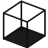

Axial views
Set a view along an axis, perpendicular to a plane of the current workplane or world workplane.
Axial views
Along the Z axis, perpendicular to the XY plane. View → World views → Top view | |
Along the Y axis, perpendicular to the XZ plane. View → World views → Front view | |
Along the X axis, perpendicular to the YZ plane. View → World views → Left view | |
Along the X axis, perpendicular to the YZ plane. View → World views → Right view | |
Along the Y axis, perpendicular to the XZ plane. View → World views → Back view | |
 | Along the Z axis, perpendicular to the XY plane. View → World views → Bottom view |
Axial views
Workplane views
Along the Z axis, perpendicular to the XY plane. View → Workplane views → Top view | |
Along the Y axis, perpendicular to the XZ plane. View → Workplane views → Front view | |
Along the X axis, perpendicular to the YZ plane. View → Workplane views → Left view | |
Along the X axis, perpendicular to the YZ plane. View → Workplane views → Right view | |
Along the Y axis, perpendicular to the XZ plane. View → Workplane views → Back view | |
Along the Z axis, perpendicular to the XY plane. View → Workplane views → Bottom view |